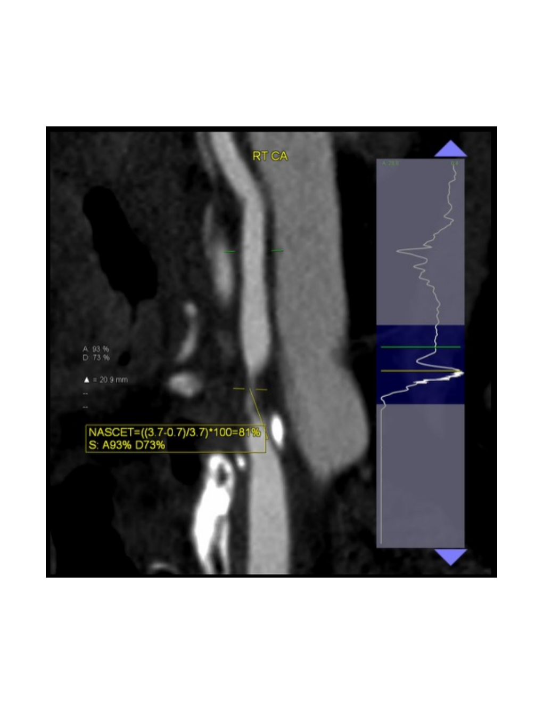

Reports a Lean/Mathlib formalization of the logic's syntax, GEL semantics and model-checking algorithm correctness; details are deferred to a separate paper.
Abstract
Ensemble Logic (EL) is a family of modal logics over metric monoids whose modal parameters are terms with quantified variables. We study its member over the Euclidian space, called Spatial Ensemble Logic (SEL), for biomedical images. Geometric element ensembles (GELs) represent atomic propositions by finite lists of effectively presented semi-algebraic sets, principally closed balls. Translation, dilation and erosion preserve individual balls up to emptiness in any dimension. Translation and dilation act element-wise, but element-wise erosion gives only an inner bound. For $k\geq 2$, finite unions of balls are closed under neither intersection nor erosion. We therefore separate record representation from the evaluation domain. Our main result is a satisfaction-preserving translation over GELs into the first-order theory of real closed fields. It yields computable semi-algebraic satisfaction sets, decidable model checking and finite real algebraic evidence. For a fixed formula and dimension, model checking has polynomial data complexity under stated rationality and bounded-degree assumptions. Combined complexity is PSPACE-hard and in EXPSPACE. On the line, rational interval data admit linear-arithmetic evaluation with rational evidence, under rationality assumptions on the norm, query and evaluation point. For $k\geq 2$, rational balls can force irrational witnesses. Lower and upper annotation bounds propagate through formulas. Synthesis of a ball ensemble is decidable within a prescribed budget of balls and undecidable without one. In a vascular use case, medial ball ensembles decide calibre and stenosis queries at stored centers by comparing stored numbers. We also examine how far evaluation can proceed element-wise when the union forming a support is deferred to the point of evaluation.
Problem
Spatial Ensemble Logic (SEL), a modal logic over Euclidean space with quantified term parameters, is intended for querying biomedical image annotations. It was open which spatial members of Ensemble Logic admit effective model checking on finite geometric presentations such as unions of balls.
Approach
Atomic propositions are represented by geometric element ensembles (GELs), finite lists of effectively presented semi-algebraic sets, mainly closed balls. Formulas over GELs are translated, preserving satisfaction, into the first-order theory of real closed fields and decided by quantifier elimination. The paper also covers morphological closure properties, enclosures for approximate records, and bounded synthesis. A Lean/Mathlib formalization reportedly covers the syntax, the semantics over GELs and the correctness of the model-checking algorithm, relative to a decision procedure whose verified realization is left open.
Results
Model checking is decidable, with computable semi-algebraic satisfaction sets and real algebraic evidence. Data complexity is polynomial under stated assumptions; combined complexity is PSPACE-hard and in EXPSPACE. Ball synthesis is decidable with a prescribed budget of balls and undecidable without one. A vascular use case decides calibre and stenosis queries from medial ball ensembles.

Figure 3. From a carotid annotation to cohort evidence (image source: CT Dataset (ID: CTA-Athero-Public, 2024)). (a) A CT angiogram with the diameter measurements used to grade a stenosis. (b) The segmented lumen. (c) A medial ball ensemble: ten inscribed balls with centres on the centreline, including the stenotic centre c_{6} and the distal reference centre c_{9} . (d) The resulting record. (e)